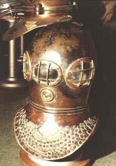

|
|
DEANE BROTHERS - JOHN BEVAN

Today this is the National Maritime Museum at Greenwich, but in the year 1812
when Napoleon was retreating from Moscow, this was the Greenwich Hospital School
for boys. At that time two young boys from Deptford, John and Charles Deane,
were studying here to become merchant seamen. At the age of 14 they then went
to sea for a period of seven years and returned home to Deptford and settled
down.
Charles Deane took up employment as a ship’s corker at Barnard’s Shipyard. During this time he discovered the problem of fighting fires within the holds of ships. And in 1823 he patented a smoke breathing apparatus or smoke helmet which enabled him to do down within the hold of a smoke filled ship to fight fires.
He would not have had enough money to build the equipment himself. So he in fact sold his patent to his employer, Edward Barnard.
SMOKE HELMET -JOHN BEVAN

It took several years before anybody did very much about it, but in 1827 they manufactured their first smoke helmets. They went along to see somebody called Augustus Siebe who could manufacture in those materials. And this helmet here is an example of one of those first helmets, probably one of only two or three that were ever made.The helmet has one, two, three visors so that the wearer can see quite a wide angle around him. Here in the front he has a small vent. This originally had a small handle on it to allow the wearer to open and close it. When it was opened he would be able to speak freely with his attendants and to breathe the outside air. Once shut the bellows would have to be worked to allow the wearer to breathe fresh air. The fresh air was delivered by a pipe or umbilical and delivered to this intake elbow at the back of the helmet. The air was then tracked inside the helmet and then over the three visors to prevent misting of the visors. The air was allowed to escape through an exhaust pipe, also at the back of the helmet, and to this was attached a small flexible pipe.
We can see remnants of the leather dress attached to the single row of rivets around the edge. We can now also see the inside flange, a bolted flange, which connected the top of the helmet to the corselet.
Charles Deane had very little success in marketing this as a smoke helmet, so in 1828 he with his brother decided to try and find another application and they converted it into a diving helmet. This was quite a revolutionary move. To convert this into a diving helmet several modifications have to be made.
Because this is a lightweight helmet it would have been very buoyant and they therefore had to attach lead weights to it to keep it on the divers shoulder once underwater. These many lead plugs appear to be there to cover up holes that they drilled in the corselet: perhaps to experiment with allowing the air to bubble out from the corselet itself. A very much larger hole here suggests that this is where they experimented with a special exhaust valve.
A recent discovery in France was this helmet. It was probably the very first dedicated diving helmet to be produced based on the smoke helmet pattern.
Remembering that this is primarily a smoke helmet that became the prototype diving helmet it would be interesting to compare features from this helmet with what eventually became the most popular hard hat diving helmet.
DIVING HELMET -JOHN BEVAN
This is a Siebe Gorman Standard Diver helmet and it evolved from the open helmet. One of the first customers to buy the Charles Anthony Deane cum Barnard cum Augustus Siebe suit was George Edwards who was in charge of Lowestoft Harbour. But he didn’t like the problem of the flooding of the helmet, every time the diver leaned forward. He came up with the idea of making a watertight connection between the suit and the edge of the corselet. He achieved this by a loose flange which clamped the suit to the corselet thus making the diver totally sealed within his suit and he could move in any direction; lean forward, lean backward without any danger of flooding his helmet.
There are one, two, three visors which again give the wearer a wide angle of view. An additional feature this time is that the front faceplate can unscrew. This gives the wearer the advantage of being able to talk to his attendant before and after leaving the water. He could also have a cigarette if he wanted one. The additional buoyancy of the diver’s dress is compensated for by attaching two large lead weights: one at the front and one at the back of the corselet.
This helmet also has a split at the neck which separates the top of the helmet from the corselet. It has a special joint which allows the helmet to be removed by a 1/8th turn. The helmet now is heavy to compensate for the buoyancy of the air trapped inside.
A diver in Standard Dress may be thought of as a one man diving bell. Air flows freely around his helmet and occupies the top part of his suit. In this way the fluctuations of breathing and pumping are absorbed in the volume of the dress. Buoyancy is not affected because he is normally negatively buoyant.
Because this is a closed or tight dress one of the dangers is that the dress can be over inflated. To prevent this happening we have a special valve which can be adjusted by the diver.
|
|